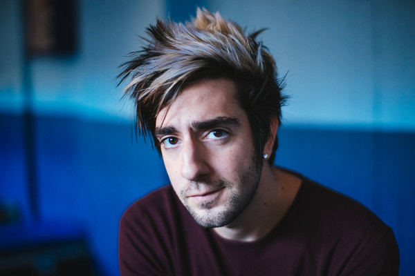
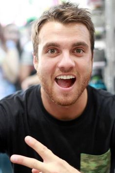
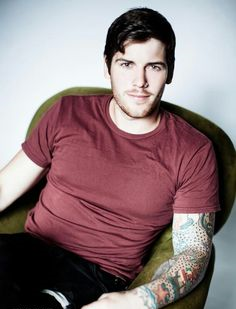

The Members in All Time Low
Home
Members
Studio Albums
References
 Alex Gaskarth
Jack Barakat
Rian Dawson
Zack Merrick
Alex Gaskarth
Jack Barakat
Rian Dawson
Zack Merrick
Alex Gaskarth
 During their tour across the country that summer the band bumped into fellow pop punker, Amber Pacific, who brought the young band to the attention of the record label,Role in Band: Alexander William "Alex" Gaskarth is the lead vocalist, rhythm guitarist, and primary songwriter.
During their tour across the country that summer the band bumped into fellow pop punker, Amber Pacific, who brought the young band to the attention of the record label,Role in Band: Alexander William "Alex" Gaskarth is the lead vocalist, rhythm guitarist, and primary songwriter.
Born: He was born on December 14, 1987 in Essex, United Kingdom.
Siblings: Jillian Gaskarth, Helen Gaskarth, Tom Gaskarth
Height: He is 1.84 m.
Fun Facts: When he was six years old, he moved to Baltimore, Maryland, United States. Alex hosted the 2015 and 2016 Alternative Press Music Awards along with fellow bandmate, Jack Barakat. During an interview, he told alternative press that he knows how to read the stars and this is the reason why he has never gotten lost.
Jack Barakat
Role in Band: Jack is the lead guitarist for the band.
Born: He was born on June 18, 1988, in Lebanon.
Siblings: He has a older sister named May and an older brother named Joe.
Height: He is 1.88 m.
Fun Facts: His favorite band is Blink 182. Jack used to host radio show Full Frontal every Monday with Alex Gaskarth. He also has a tattoo of Jack Skellington playing his guitar, as well as a bunny tattoo. Also, he loves the movie Home Alone, and he even has visited the home of Kevin McCallister.
Rian Dawson
Role in Band: Rian Dawson is the main drummer of the band.
Born: He was born on December 18, 1987, in Baltimore Maryland, where he grew up.
Siblings: He has an older brother named Chase. Rian is the most responsible member of the band and he is often considered the father of the band.
Height: He is 1.78 m.
Fun Facts: His favorite band is also Blink 182, and both he and Jack got tattoos of Blink bunnies. He not only plays the drums, but the piano and guitar as well. He also has a studio in Nashville called Track Happy Studios. There, he produces music for smaller bands such as The Everyday Anthem.
Zack Merrick
Role in Band: Zachary Steven Merrick is the bassist and backup vocalist, but also can play acoustic guitar.
Born: Zachary was born on April 21st,1988 in Baltimore, Maryland.
Siblings: He has a sister named Samantha.
Height: 1.78 m
Fun Facts: During interviews and while on stage, Zack is known to be very quiet. He loves photography, skateboarding, and playing his bass. He has many tattoos, several on his arms and one on his chest about his grandmother who passed away. Earlier in 2015, Zack had won best bassist at the APMA's.